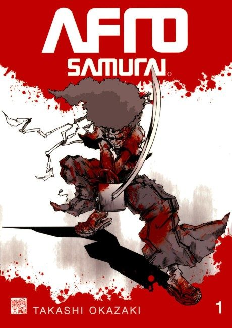

Anime
Anime
Manga2007 · Action, Adventure
Afro Samurai
アフロサムライ
AniList7.1
Animeter—
Episodes5 ep
MangaUnclear
Anime finished. Where does the manga pick up?
StatusNo source yet
We looked for where the anime ends in the manga but found no source we trust yet. The manga is 10 chapters, finished.